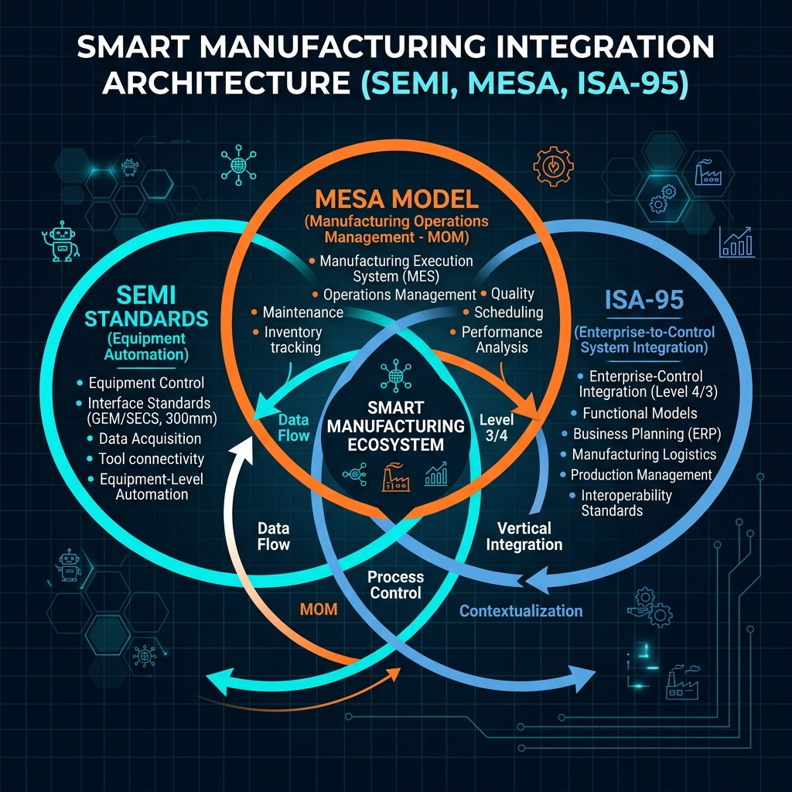

SEMI · MESA · ISA-95 융합 가이드
현대 하이테크 제조 생태계(반도체, 디스플레이 등)를 지탱하는 3대 글로벌 제조 표준의 아키텍처적 포지셔닝과 실무 데이터 연계 시나리오를 상세히 정리합니다.
1. 제조 시스템 표준 삼각 편대 개요
성공적인 스마트 팩토리와 제조 실행 시스템(MES)을 구축하기 위해서는 장비 단부터 기업 경영 시스템 단까지의 데이터가 끊김 없이 흘러야 합니다. 글로벌 제조 엔지니어링 업계는 이를 위해 세 가지 핵심 표준 기구 및 아키텍처 모델을 채택하고 있으며, 각각 독자적인 문제 해결 영역을 가집니다.
반도체 및 디스플레이 장비와 상위 제어 시스템(EAP/MES) 간의 물리적·논리적 연결을 담당합니다. SECS/GEM 프로토콜부터 고속 데이터 수집 규격인 EDA(Interface A)까지 장비 레벨의 데이터 취득 및 제어를 표준화합니다.
제조 실행 시스템(MES)이 공장에서 수행해야 하는 기능적 영역(MES 11대 핵심 기능)과 비즈니스 가치 창출을 위한 비즈니스 라이프사이클 모델을 제시하여 '무엇(What)'을 관리해야 하는지 프레임워크를 제공합니다.
Level 4(ERP/PLM)와 Level 3(MOM/MES) 간의 역할 분담, 인터페이스 정보 모델(인력, 설비, 자재, 공정) 및 데이터 송수신 규격을 명확히 하여 정보 고립(Information Silo) 현상을 제거하고 유연한 통합 아키텍처를 제시합니다.

[그림 1] 스마트 제조를 구성하는 3대 표준(SEMI, MESA, ISA-95)의 유기적 매핑 관계도
2. 3대 핵심 표준 비교 매트릭스
각 표준이 표방하는 철학, 주관 단체, 적용 타겟 및 핵심 스펙을 대조하여 상호 역할 분담 관계를 명확히 정의합니다.
| 구분 | SEMI Standards | MESA Model | ANSI/ISA-95 |
|---|---|---|---|
| 주관 기관 | SEMI (Semiconductor Equipment and Materials International) | MESA International (Manufacturing Enterprise Solutions Association) | ISA (International Society of Automation) / ANSI / ISO (IEC 62264) |
| 중점 대상 레이어 | Level 1 ~ Level 2 (장비, 컨트롤러, 센서 및 물리 제어계) | Level 3 (MOM / MES 생산 실행 제어 영역 전체) | Level 3 ~ Level 4 (MOM과 ERP/PLM 간 연계 및 MOM 내부 통합) |
| 핵심 철학 및 목적 | 장비 인터페이스 표준화를 통한 설비 호환성 향상 및 데이터 획득 비용 최소화 | 제조 비즈니스의 민첩성 확보를 위한 MOM 기능 가이드라인 및 모범 사례 제시 | 통합 모델링 표준화를 통해 ERP-MES 간의 상호 운용성 보장 및 시스템 연동 비용 절감 |
| 대표적인 핵심 규격 |
- SECS/GEM (E4, E5, E37, E30) - GEM300 (E39, E40, E87, E90, E94) - EDA / Interface A (E120, E125, E134) - RAM/Cybersecurity (E10, E116, E187) |
- Legacy MES 11대 기능 영역 - Smart Manufacturing Lifecycles (5대 라이프사이클) - Cross-Lifecycle Threads (품질, 컴플라이언스 등) |
- Part 1: 기능 및 객체 모델 (4대 자원 등) - Part 2: 개체 속성 모델 (인터페이스 속성) - Part 3: 제조 운영 관리의 활동 모델 (8대 활동) - Part 4: MOM 내부 데이터 흐름 규격 |
| 데이터 인터페이스 형태 | 바이너리 스트림(SECS-II) 및 고속 XML/JSON 웹 서비스 (HTTP/SOAP, gRPC) | 기능적 요구사항 정의 중심 (특정 전송 프로토콜을 규정하지 않음) | XML 스키마 기반 데이터 모델 표준(B2MML: Business to Manufacturing Markup Language) |
3. 융합 데이터 흐름 아키텍처 (Level 1~4 통합 맵)
ERP(Level 4)에서 수립된 오더가 MES(Level 3)를 거쳐 장비(Level 1~2)로 하달되고, 실시간 데이터가 상향 취득되는 구조적 맵입니다.
4. 반도체 실무 시나리오 기반의 3대 표준 연계 워크플로우
신규 반도체 웨이퍼 가공 오더가 기업의 ERP 시스템에서 생성되어 최종 장비에서 가공되고, 그 수율 데이터가 다시 환류되기까지 3대 표준은 아래와 같은 타임라인 흐름에 따라 긴밀히 공조합니다.
Level 4 ERP 시스템에서 웨이퍼 가공 주문(Work Order)이 확정됩니다. 이 주문 정보는 ISA-95 규격의 Operations Schedule 모델에 입각하여 XML 구조(B2MML 규격)로 변환됩니다. 여기에는 생산 제품 코드, 목표 수량, 투입 원자재 사양, 납기 윈도우 등의 정보가 엄밀히 모델링되어 비동기 메시지 큐를 통해 Level 3 MES로 안정적으로 전달됩니다.
주문을 접수한 MES는 MESA 모델의 상세 생산 스케줄링(Operations Detail Scheduling) 및 작업 단위 디스패칭(Dispatching) 활동을 가동합니다. 공장 내의 설비 부하량, 챔버 상태(SEMI E10 RAM 데이터 기준), 원자재 위치(재고 운영 관리)를 검토하고, 특정 설비 포트(E87 Carrier Management 기준)에 웨이퍼 캐리어를 투입할 일정을 계산하여 최적의 제어 지시를 결정합니다.
일정이 결정되면 MES 상위의 EAP(Equipment Application Program)는 설비 인터페이스 규격을 작동합니다. SEMI E40 (Processing Job)으로 작업 순서 및 레시피 파라미터를 바인딩하고, SEMI E94 (Control Job)를 통해 설비 챔버의 운전 방식을 규정합니다. 설비는 SEMI E87 (Carrier Management)과 SEMI E90 (Substrate Tracking)에 의거하여 FOUP(캐리어) 내 웨이퍼들의 물리적 로딩 및 반송 이벤트를 실시간 검증하며 가공을 완수합니다.
설비 가공 중 발생하는 알람 및 가공 상태 이행(Idle -> Running -> Done)은 SEMI E30 GEM 이벤트 보고 체계로 MES에 전송됩니다. 동시에 가스 유량, 압력, RF 파워 등 공정 제어계 고유의 센서 데이터는 SEMI E125/E134 EDA (Interface A) 패킷에 실려 메가헤르츠(MHz)급의 초고속 속도로 빅데이터 분석계로 직행합니다.
작업 완료 시 MES는 설비 데이터 스트림을 결합하여 MESA의 성과 분석(Performance Analysis) 규칙에 의거해 설비종합효율(OEE) 및 시간당 산출 속도를 집계합니다. 이 정보는 다시 ISA-95의 Operations Performance 모델로 격상되어 최종 생산 실적 보고서 형태로 ERP 시스템에 자동 통보됨으로써, 다음 자원 계획(SCM) 및 원가 산정 프로세스에 즉시 반영됩니다.
5. 스마트 제조 프레임워크와 미래 동향
최근 MESA와 ISA-95 기구는 IIoT, 인공지능(AI/ML), 디지털 트윈과 같은 파괴적 기술을 표준 프레임워크 내에 완전히 수용하고 있습니다. 특히 MESA는 전통적인 11대 기능 범위를 뛰어넘어, 비즈니스 중심의 5대 핵심 라이프사이클과 이를 가로지르는 크로스 스레드(품질 스레드, 디지털 트윈 스레드 등) 모델을 구축하였습니다. 또한, ISA-95는 Edge computing 및 클라우드 네이티브 환경에 부합하도록 비동기 메시지 및 gRPC API 데이터 교환 스펙(Part 8/9)을 확대 개발하여, 현장 설비(Level 1~2)의 고속 센서 정보를 클라우드 비즈니스 로직에 직결시킬 수 있는 플랫 아키텍처의 기틀을 다지고 있습니다.
- SEMI는 손발(물리적 실행 및 센싱 인터페이스)에 대응하며, 초고속 전송 및 물리 정합성에 최적화되어 있습니다.
- MESA는 두뇌(기능적 의사결정 프레임워크)에 대응하며, 사업 목표 달성을 위해 MES 시스템이 갖추어야 할 지능의 범위를 가이드합니다.
- ISA-95는 신경계(시스템 간 인터페이스 표준)에 대응하며, 분산된 두뇌와 이종 정보 시스템들이 오해 없이 공통 언어(B2MML)로 통신하도록 허브 역할을 수행합니다.